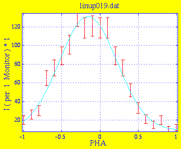
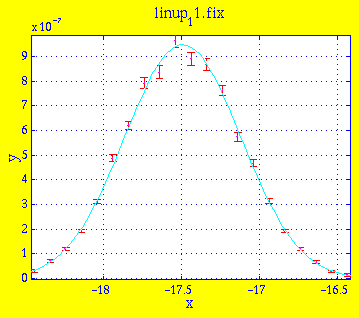
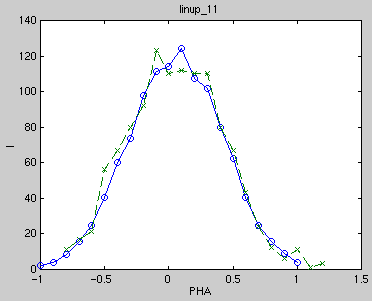

Amplitude 1.2204e+02 4.5524e+00 Centre -1.5553e-01 1.2315e-02 Width 3.7758e-01 1.6463e-02 Background 8.8756e+00 2.3591e+00 * Chi Squared 0.8507
This is the result linup_11.sim of simulation with 3e6 neutrons. Instrument definition linup-6.instr.

Amplitude 9.5078e-07 1.2839e-08 Centre -1.7493e+01 2.8674e-03 Width 3.7039e-01 4.7474e-03 Background -2.8020e-09 5.4312e-09 * Chi Squared 1.5742

The measured and simulated data are in good agreement.